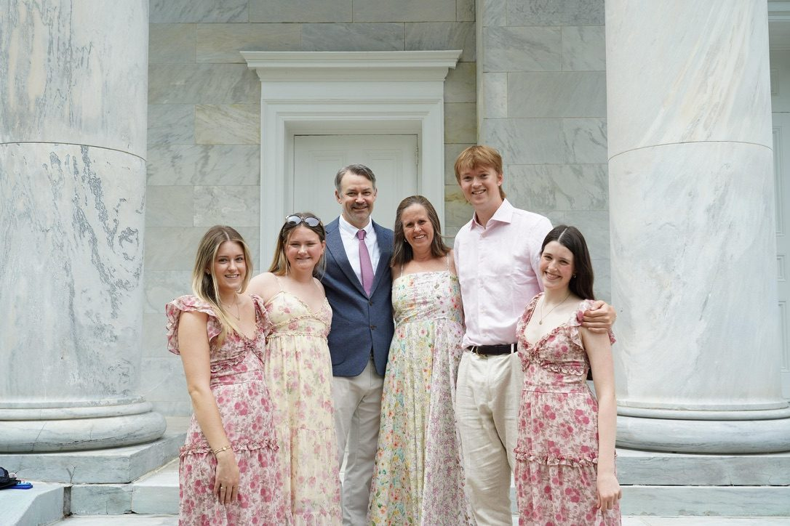
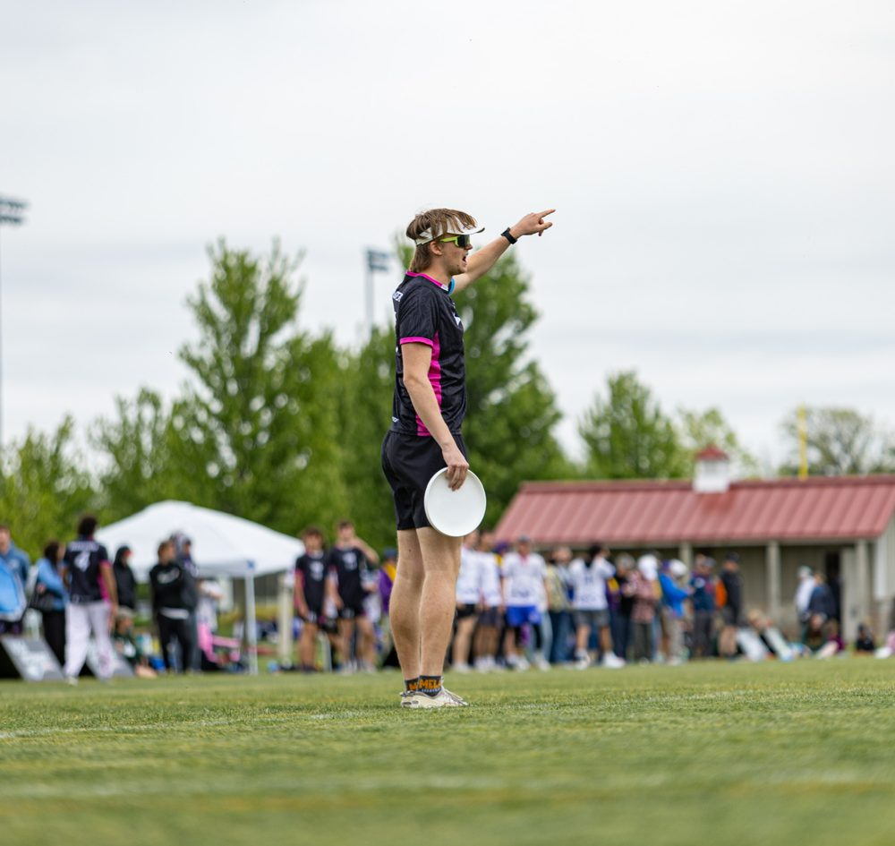
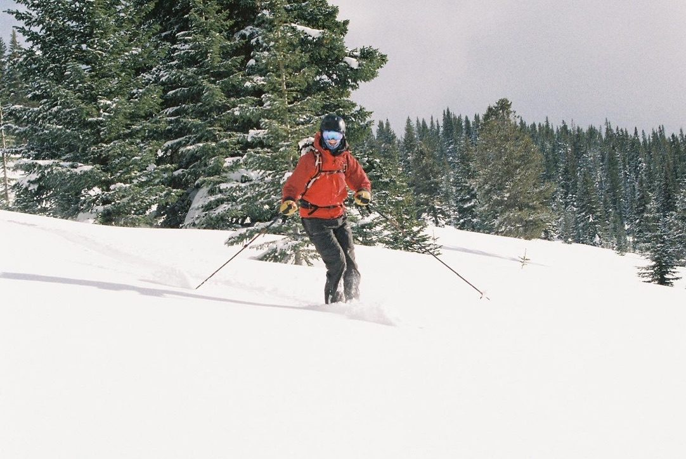

What I Do
My sophomore year at Middlebury, I took a GIS class, and to a great degree, it changed my life. Since then, I have directed my academic interests toward spatial analysis, cartography, and design. Although my interests lie primarily in the cartography sphere, I love using spatial analysis to assess complex issues. I have also compiled and designed several reports and pamphlets for organizations including the Vermont Geological Survey and Empty Arms Bereavement Support.
In my process, I have used primarily QGIS, ArcGIS Pro, and RStudio for spatial analysis, with QGIS being my greatest area of expertise. For design and map finishing, I use the Adobe Creative Cloud suite, with my strongest expertise in Adobe Illustrator and Photoshop. In addition to these, I have experience with the following software and languages: the ArcGIS Online suite, Blender, Agisoft Metashape, Python, and HTML.
At Middlebury, I was a double major in Earth and Climate Sciences and Geography, and I have significant lab experience. I spent 1.5 years working in Will Amidon’s geochronology lab, doing U-Pb dating of zircons and dolomites. I am also passionate about teaching: I spent two years in total as a Teaching Assistant — for Environmental Geology, an introductory geology class, and, in my senior year, for Human Geography with GIS, an advanced introduction to using QGIS for spatial analysis.
About Me
I’m Liam Reynolds, a Middlebury College graduate who double majored in Geography and Earth and Climate Sciences. I’m really passionate about data, data visualization, spatial analysis, and cartography — over the past few years I’ve discovered a great joy in turning complex spatial data into clear, compelling maps and visuals. I also greatly enjoy doing graphic design.
I have a wide range of technical skills including hundreds of hours of experience in QGIS, ArcGIS, the Adobe Creative Cloud Suite, and R. I’m passionate about passing on my knowledge in these areas to others, as I love to see other people find joy in the things I love.
Outside of work, I’m an avid adventurer — a backcountry skier, biker, ultimate frisbee player, and hockey player. When I’m outside I sometimes shoot film photography, some of which you’ll see on this site. I hail from Western Massachusetts, but I’m currently located in New Zealand on a working holiday visa, helping to run Earth science field camps for college students.
If you’d like to know more about my work, feel free to reach out at liamgreynolds1@gmail.com — I’m also always open to map commissions.



